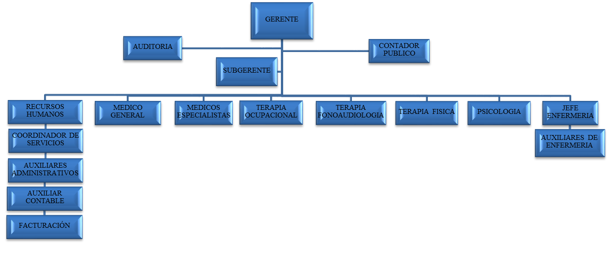

SERVICIOS OFERTADOS [INDICE]
VISITA MÉDICA [INDICE]
Como la visita médica domiciliaria no es un servicio de urgencias, No hay cobro diferencial si es diurno o nocturno. Incluye uso de tensiómetro, fonendoscopio, equipo de órganos, baja lenguas, linterna, pesa, material de bioseguridad, Oximetro de pulso y glucómetro.
ATENCIÓN AUXILIAR DE ENFERMERÍA DOMICILIARIA [INDICE]
La tarifa incluye, educación y entrenamiento a la familia en el cuidado del paciente y uso de insumos y suministros, toma de signos vitales, toma de muestras, cuidados de traqueotomía, cuidados de catéteres periféricos y sondas, cateterismos vesicales, aplicación de medicamentos, asistencia al paciente en actividades de la vida diaria, cuidados de piel, extracción de fecalomas, aplicación de enemas (el enema no está incluido), control en la administración de líquidos parenterales y nutrición enteral y parenteral (no incluye nutrición) preparación para exámenes diagnósticos para cumplir las actividades, oximetría de pulso y toma de glucometrías. Incluye también honorarios, para curaciones de baja, alta y media complejidad.
CURACIONES [INDICE]
- Curaciones Alta Complejidad Domiciliaria
- Curaciones Mediana Complejidad Domiciliaria
- Curaciones Baja Complejidad Domiciliaria
La tarifa incluye curación de catéter central, drenaje y curación de absceso, cuidados de escaras grado 3 (se extiende más profundamente a través de estructuras superficiales, afecta a la grasa subcutánea, produciendo necrosis del tejido comprometido y alcanza, pero sin llegar a comprometer, los músculos) y grado 4 (destrucción de todo el tejido blando desde la piel hacia el hueso, el nivel de ulceración llega a músculo, hueso, articulaciones, cavidades orgánicas adyacentes y estructuras de sostén), herida por mordedura de perro, heridas abiertas como complicaciones de procesos quirúrgicos (apendicetomías, laparotomías, resección de masas, fístulas entero Cutáneas, etc.), ulceras varicosas infectadas, osteomielitis con herida abierta de más de 10 cm.
Aplica para quemadura grado I, cuidado de escaras grado 2 (afecta a las capas superficiales de la piel y se prolonga a la primera porción del tejido graso subyacente y se manifiesta con erosiones, ampollas y/o desgarros superficiales), herida limpia abierta hasta 10 cm, lavado, irrigación y cuidados de herida en área especial (cara, cuello, manos, pies, pliegues de flexión y genitales), osteomielitis con herida abierta hasta 10 cm, úlceras varicosas no infectadas.
Aplica para procedimientos tales como retiro de puntos, sustitución de tapón (mecha) o drenaje vaginal o vulvar, lavado, irrigación y cuidados de herida en área general, cuidado de escaras grado I (limitada a las capas superficiales de la piel, se manifiesta a través de enrojecimiento y no está rota la barrera cutánea y se mantiene la integridad de la piel), herida limpia suturada, irrigación o curación de conductos nasales.
APOYO TERAPÉUTICO [INDICE]
- Terapia Respiratoria
- Terapia De Lenguaje
- Terapia Física
- Terapia Ocupacional
Incluye: consulta de primera vez o de control, evaluación, percusión, vibración, drenaje postural, oximetría, succión, medicación respiratoria mediante micro nebulización, nebulización, acelerador de flujo, tos asistida y/o ejercicios respiratorios. Incluye derecho de uso de nebulizador, aspirador de secreciones, elementos de bioseguridad, incluye guantes de manejo, tapabocas, aplicadores, bajalenguas, gafas, jabón antiséptico, toallas desechables, bolsas recolectoras de desechos, ruta recolectora de desechos, jeringas, kit de nebulización, SSN, terbutalina y berodual, solución para nebulizar, incluye succionador.
Incluye la consulta evaluación, entrenamiento para autocuidado e integración familiar, social y/o laboral del paciente.
Incluye: Consulta, evaluación, ejercicios terapéuticos, estimulación temprana, medios físicos (hidroterapia, Crioterapia, calor húmedo), electroterapia (bio-feed back, TENS, ultrasonido, diatermia) y/o tracciones.
Incluye: Consulta, evaluación, entrenamiento para auto cuidado e integración familiar, social y/o laboral del paciente.
PROGRAMA DOMICILIARIO DE ENFERMERIA [INDICE]
PLAN DE ATENCION DOMICILIARIA Y PRE HOSPITALARIA [INDICE]
Basados en las necesidades y expectativas de nuestros usuarios en la atención domiciliaria presentamos estándares de calidad de una forma innovadora, que garantiza la calidad y eficiencia en la prestación del servicio basado en los siguientes criterios:
- Disminuir al menos en un 50% el número de ingresos y estancias hospitalarias de los usuarios del programa durante el primer año de funcionamiento con respecto al año anterior.
- Capacitar al 25% de los pacientes incorporados, cuidadores y núcleos familiares según un plan diseñado y acordado al inicio de la intervención con objetivos precisos, prácticos, alcanzables y evaluables.
- Generar un equipo multidisciplinario eficaz contando con un sistema de comunicación y registro que permita presentar de forma eficiente y oportuna los servicios de salud.
- Cumplir en los protocolos de atención y manuales de funciones de atención domiciliaria al paciente hospitalizado en casa, a pacientes de consulta externa y consulta especializada.
CRITERIOS DE INGRESO AL PROGRAMA DOMICILIARIO DE ENFERMERIA [INDICE]
| ENFERMEDADES NEURO MUSCULARES CRONICAS |
|
|
| ENFERMEDAD RESPIRATORIA CRONICA (EPOC) |
|
|
| PACIENTE TERMINAL |
|
|
- Los criterios de inclusión son pertinentes y están de acuerdo a las políticas establecidas para ingreso al plan atención domiciliaria y pre hospitalaria de la EPS descritas en este documento.
- El plan de manejo es limitado en el tiempo.
- El sitio de vivienda del usuario tiene cubrimiento por parte de la red de EPS contratante y manifiestos descritos por SERVINSALUD IPS de acuerdo a la norma 2003 del 2014.
- El usuario debe tener cuidador en su domicilio.
Una vez SERVINSALUD IPS visite al paciente y confirme que las condiciones socio- económicas y de pertinencia médica para el ingreso al programa de atención domiciliaria son aptas se comunica con la EPS respectiva para solicitar la autorización que aplica. SERVINSALUD IPS diligenciara el consentimiento informado que debe ser firmado por la familia y el paciente.
El consentimiento informado debe especificar además de la información habitual, el plan de manejo que incluya el tipo de servicio solicitado y el tiempo de duración.
CRITERIOS PARA EL EGRESO DEL PROGRAMA DOMICILIARIO DE ENFERMERIA [INDICE]
- Pacientes que no cumplan los criterios de inclusión al ser valorados por el equipo multidisciplinario , debiendo ser derivados a un programa más apropiado.
- Desinterés, manifiesto o rechazo hacia el programa y/o sus actividades por parte del usuario o su cuidador.
- Cambio de domicilio del usuario por fuera del área de operación del programa.
- Cuando cambian las condiciones que motivan su ingreso como la mejoría del paciente.
- Reglamentación de la Norma 2003 de 2014.
OFERTA PROGRAMAS [INDICE]
El plan de atención domiciliaria y pre hospitalaria hace referencia a programas de atención que sin poner en riesgo la vida del paciente, se encuentran bajo una guía multidisciplinaria e interdisciplinaria, la cual brinda una solución efectiva al problema de salud, teniendo siempre como como primer y más alto logro dentro de sus objetivos brindar calidad de vida.
Dentro del programa se pueden establecer ventajas para:
- Participación y responsabilidad de la familia.
- Mejor calidad de vida y bienestar.
- Asistencia personalizada y más humanizada.
- Educación para la salud dirigida a la familia.
- Menor riesgo de iatrogenia.
- Incremento de la eficacia y efectividad mediante una asistencia más humanizada.
- Uso más eficiente de los recursos.
- Posibilidad de integrar y mejorar las relaciones entre los diversos niveles de complejidad.
- Posibilidad de atención continuada, integral e integrada y multidisciplinaria entre los profesionales de los diferentes niveles.
- Búsqueda activa (mercadeo) Hospitales, IPS, EPS.
- Referencia y contra referencia de pacientes.
- Disminución de riesgos intrahospitalarios: biológicos, físicos y químicos.
- Oportunidad en la atención al paciente.
- Determinación de la población.
- Oportunidad de valoración (ingreso paciente nuevo) 24 horas.
- Pertinencia de los servicios.
- Evolución, manejo y estado clínico del paciente.
Paciente y sus familiares como:
Para el sistema de salud:
Paciente Agudo
Paciente crónico
DEBERES DE LOS USUARIOS DOMICILIARIOS [INDICE]
- Facilitar en todo lo posible el ejercicio de las actividades del equipo de atención domiciliaria.
- Brindar un trato digno, cordial y respetuoso a los miembros del equipo médico y enfermeros.
- Avisar con suficiente anticipación sobre cualquier cambio de domicilio o situación que le impida atender la visita del equipo de atención domiciliaria.
- Realizar su mayor esfuerzo para el logro de los objetivos del programa.
- Permitir la atención del servicio del equipo médico, terapéutico y demás para lograr una adhesión al programa de atención domiciliara y pre hospitalaria.
DERECHOS DE LOS USUARIOS DOMICILIARIOS [INDICE]
- Recibir un trato respetuoso y cordial de los integrantes del equipo de atención domiciliaria.
- Recibir una atención de calidad de acuerdo con su enfermedad y las metas establecidas para su caso.
- Recibir orientación en los tramites y procesos que deba realizar en otras instituciones cartas, autorizaciones, emisiones.
- Recibir información sobre la evolución de su caso y el logro de los objetivos, con el fin de prepararse para el retiro del programa.
- Presentar quejas, sugerencias y reclamos, así como a recibir respuestas de la Misma.
INDICE [INICIO]
- SERVICIOS OFERTADOS
- PROGRAMA DOMICILIARIO DE ENFERMERIA
- PLAN DE ATENCION DOMICILIARIA Y PRE HOSPITALARIA
- CRITERIOS DE INGRESO AL PROGRAMA DOMICILIARIO DE ENFERMERIA
- CRITERIOS PARA EL EGRESO DEL PROGRAMA DOMICILIARIO DE ENFERMERIA
- OFERTA PROGRAMAS
- DEBERES DE LOS USUARIOS DOMICILIARIOS
- DERECHOS DE LOS USUARIOS DOMICILIARIOS
ORGANIGRAMA

Leer mas
POLITICA SEGURIDAD DEL PACIENTE
La seguridad de los pacientes se constituye en una prioridad en la gestión de calidad del cuidado que se brinda.
Leer mas
GALERIA